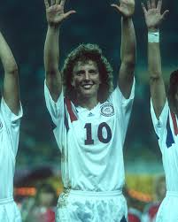
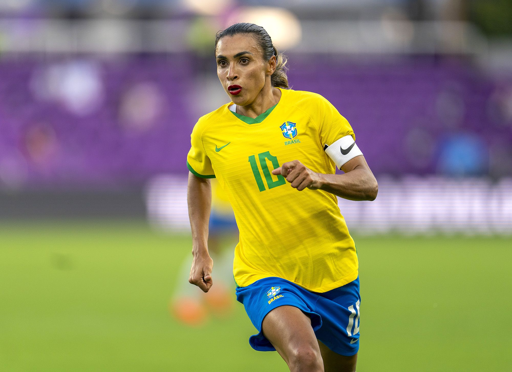
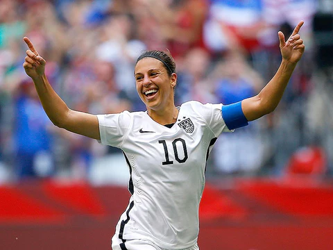

The FIFA Women's World Cup is an international association football competition contested by the senior women's national teams of the members of the Federation Internationale de Football Association (FIFA), the sport's international governing body. The competition has been held every four years and one year after the men's FIFA World Cup since 1991, when the inaugural tournament, then called the FIFA Women's World Championship, was held in China. Under the tournament's current format, national teams vie for the remaining 31 slots in a three-year qualification phase. The host nation's team is automatically entered as the first slot. The tournament, called the World Cup Finals, is contested at venues within the host nation(s) over about one month.
In total, 44 nations have played in at least one Womens World Cup. Of those, five nations have won the World Cup. With four titles, the United States is the most successful Womens World Cup team; it is one of only seven nations to play in every World Cup. They have also had the most top-four finishes-8, medals-8, as well as final appearances-5, including the longest streak of three consecutive finals in 2011, 2015, and 2019.
In 1991, USA took home the trophey. In 1995, Norway took home the trophey. In 1999, USA took home the trophey. In 2003, Germany took home the trophey. In 2007, Germany took home the trophey. In 2011, Japan took home the trophey. In 2015, USA took home the trophey. In 2019, USA took home the trophey. In 2023, Spain took home the trophey.
At the end of each World Cup, awards are presented to select players and teams for accomplishments other than their final team positions in the tournament. The Golden Ball (currently commercially termed "adidas Golden Ball") for the best overall player of the tournament (first awarded in 1991). The Golden Boot (currently commercially termed "Adidas Golden Boot", formerly known as the Golden Shoe) for the top goalscorer of the tournament (first awarded in 1991). The Golden Glove (currently commercially termed "Adidas Golden Glove", formerly known as the Best Goalkeeper) for the best goalkeeper of the tournament (first awarded in 2003). The FIFA Young Player Award for the best player of the tournament under 21 years of age at the start of the calendar year (first awarded in 2011).

Michelle Akers
Marta
Carli LloydThe first instance of a Women's World Cup dates back to 1970 in Italy, with the first tournament of that name taking place in July 1970, which Denmark won. This was followed by another unofficial World Cup tournament in Mexico in 1971, in which Denmark won the title after defeating Mexico, 3 to 0, in the final at the Azteca Stadium. In the 1980s, the Mundialito was held in Italy across four editions with both Italy and England winning two titles. Fast forward to 2023, Australia and New Zealand hosted the FIFA Women's World Cup for the first time as joint hosts, and the number of participants was expanded from 24 to 32. It was also the first tournament to be held in the Southern Hemisphere. With Australia and New Zealand respectively being members of the Asian Football Confederation and Oceania Football Confederation, this was the first FIFA senior competition to be hosted across two confederations. Spain won their first-ever title, defeating England 1 to 0 in the final. This made Spain the 2nd nation to win both the Men's and Women's World Cup, after Germany. In 2027, Brazil will host the FIFA Women's World Cup, bringing the tournament to South America and Latin America for the first time. In 2031, Mexico and the United States will host the second joint hosted tournament, and the number of participants will be expanded from 32 to 48. In 2035, the home nations of the United Kingdom (England, Northern Ireland, Scotland, and Wales) will host.